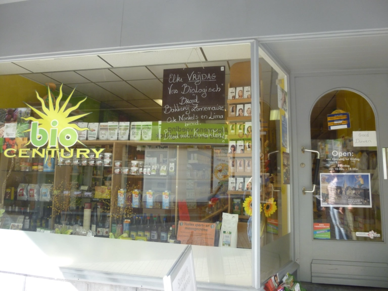
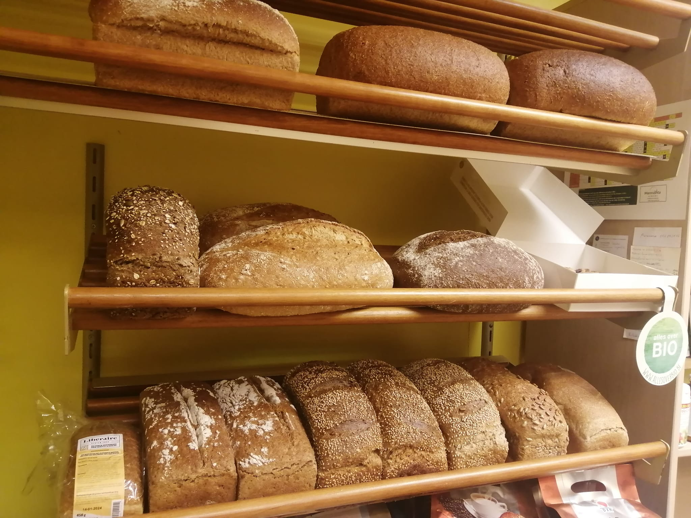
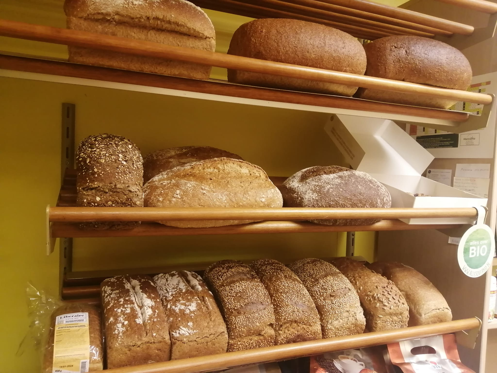

Welkom bij Bio Century!
Welkom bij Bio Century, jouw bestemming voor al je biologische behoeften in Geraardsbergen!
Bij Bio Century geloven we in de kracht van biologische voeding en duurzame producten om een gezonde levensstijl te ondersteunen en onze planeet te beschermen. Onze winkel biedt een uitgebreid assortiment aan biologische en natuurlijke producten, variërend van verse groenten en fruit tot droge kruidenierswaren, natuurlijke verzorgingsproducten en milieuvriendelijke huishoudelijke artikelen.
Of je nu op zoek bent naar verse, lokaal geproduceerde ingrediënten voor je volgende gezonde maaltijd, biologische snacks voor onderweg, of milieuvriendelijke alternatieven voor alledaagse producten, bij Bio Century vind je alles wat je nodig hebt om bewust te leven en te consumeren.
We heten je van harte welkom om onze winkel te verkennen. Ontdek de smaak van puurheid en de kracht van duurzaamheid bij Bio Century - jouw biologische bestemming in Geraardsbergen.
 
